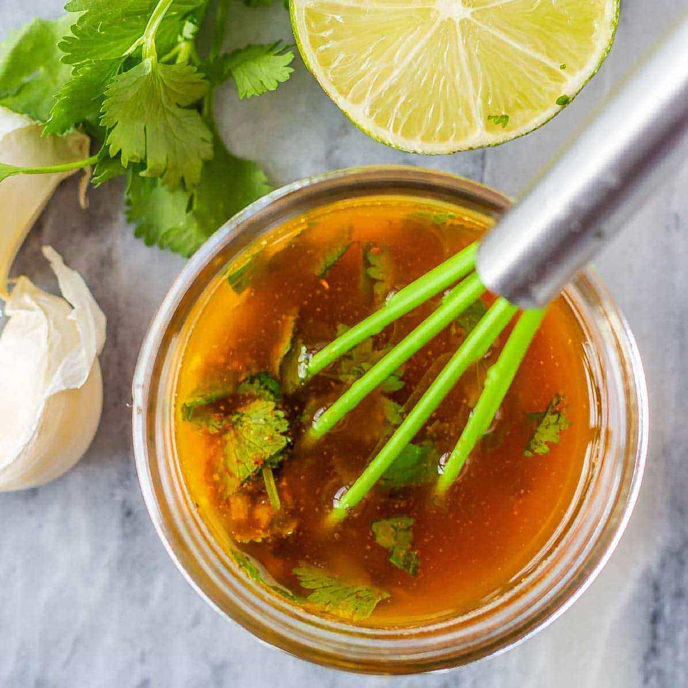

Steak Marinade

Steak Marinade
Use this simple, but delicious marinade recipe on not only steak,
but any meat you'd like! It goes great with chicken, fish, and even shrimp.
- 1 Cup fresh cilantro leaves, and stems, chopped finely
- 1/2 Cup grapeseed, avocado or other high heat oil
- 2 Freshly squeezed limes
- 1 Freshly squeezed orange
- 2 Tablespoons white vinegar
- 2 tablespoons tequila or Mexican beer (Optional)
- 1 Jalapeno or serano, seeded and minced (use half for less heat)
- 1 Teaspoon cumin
- 1 Teaspoon salt
- 1/2 Teaspoon black pepper
Directions
- Take all ingredients, and add them to a food processor, or blender.
- Blend on high, until marinade is smooth, with no chunks.
- That's it! You can now use to marinade your meat of choice before cooking.
Click here to see how we use this marinade
for our steak tacos recipe!